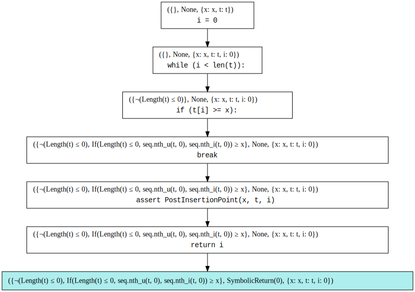

Concolic Execution¶
TODO
Write text.
import utils
from symbolic_interpreter import *
from compositional import *
class ConcolicInterpreter(SymbolicInterpreter):
def __init__(
self, concrete_store: Store,
predicates: Optional[Dict[str, Tuple[Tuple[z3.SortRef, ...], z3.SortRef, Callable]]] = None):
super().__init__(predicates=predicates)
self.subst_map: Dict[z3.ExprRef, z3.ExprRef] = {
variable.to_z3(): python_expr_to_z3_expr(concrete_store[variable])
for variable in concrete_store}
def constraint_unsatisfiable(self, constraint: z3.BoolRef) -> bool:
return is_unsat(subst(constraint, self.subst_map))
def insertion_point(x: int, t: tuple) -> int:
# assume Sorted(t)
i = 0
while i < len(t):
if t[i] >= x:
break
i = i + 1
assert PostInsertionPoint(x, t, i)
return i
kv = z3.Int("k")
post_insertion_point = (
lambda xv, tv, resultv:
z3.And(
z3.IntVal(0) <= resultv,
resultv <= z3.Length(tv),
z3.ForAll(
[kv],
z3.Implies(
z3.And(
kv >= z3.IntVal(0),
kv < resultv),
tv[kv] < xv
)
),
z3.ForAll(
[kv],
z3.Implies(
z3.And(
kv >= resultv,
kv < z3.Length(tv)),
tv[kv] >= xv
)
)))
display_formula(post_insertion_point(z3.Int("x"), z3_sequence("t"), z3.Int("result")))
0 ≤ result ∧
result ≤ Length(t) ∧
(∀k : 0 ≤ k ∧ k < result ⇒ Nth(t, k) < x) ∧
(∀k : k ≥ result ∧ k < Length(t) ⇒ Nth(t, k) ≥ x)
result ≤ Length(t) ∧
(∀k : 0 ≤ k ∧ k < result ⇒ Nth(t, k) < x) ∧
(∀k : k ≥ result ∧ k < Length(t) ⇒ Nth(t, k) ≥ x)
import inspect
insertion_point_code = "".join(inspect.getsourcelines(insertion_point)[0]).strip()
insertion_point_program = parse(insertion_point_code)
display_program(insertion_point_code)
def insertion_point(x: int, t: tuple) -> int:
# assume Sorted(t)
i = 0
while i < len(t):
if t[i] >= x:
break
i = i + 1
assert PostInsertionPoint(x, t, i)
return i
x = Variable("x", INT_TYPE)
t = Variable("t", TUPLE_TYPE)
initial_store = Store({x: 1, t: (13,)})
initial_store
Store({Variable('x', Type('int')): 1, Variable('t', Type('tuple')): (13,)})
predicates = {
"PostInsertionPoint": ((z3.IntSort(), z3.SeqSort(z3.IntSort()), z3.IntSort()), z3.BoolSort(), post_insertion_point),
"len": ((z3.SeqSort(z3.IntSort()),), z3.IntSort(), z3.Length)
}
interpreter = ConcolicInterpreter(
concrete_store=initial_store,
predicates=predicates
)
insertion_point_set = interpreter.execute_function_body("insertion_point", insertion_point_program)
display_set(insertion_point_set)

final_constraint = z3_and(*get_leaves(insertion_point_set)[0][0].environment.path_constraints)
final_constraint
¬(Length(t) ≤ 0) ∧
If(Length(t) ≤ 0, seq.nth_u(t, 0), seq.nth_i(t, 0)) ≥ x
s = z3.Solver()
s.add(z3.Not(final_constraint))
assert s.check() == z3.sat
z3_model = s.model()
z3_model
[x = 3, t = Unit(2)]
def store_from_z3_model(model: z3.ModelRef) -> Store:
env: Dict[Variable, ValueType] = {}
for constant in model:
constant_name = constant.name()
value = model[constant]
t = get_type_for_z3_expr(value)
env[Variable(constant_name, t)] = z3_expr_to_python_expr(value)
return Store(env)
new_store = store_from_z3_model(z3_model)
new_store
Store({Variable('x', Type('int')): 3, Variable('t', Type('tuple')): (2,)})
interpreter = ConcolicInterpreter(
concrete_store=new_store,
predicates=predicates
)
new_insertion_point_set = interpreter.execute_function_body("insertion_point", insertion_point_program)
display_set(insertion_point_set)
new_final_constraint = z3_and(*get_leaves(new_insertion_point_set)[0][0].environment.path_constraints)
new_final_constraint
Length(t) ≤ 1 ∧
¬(Length(t) ≤ 0) ∧
¬(If(Length(t) ≤ 0, seq.nth_u(t, 0), seq.nth_i(t, 0)) ≥ x)
s = z3.Solver()
s.add(z3.Not(final_constraint))
s.add(z3.Not(new_final_constraint))
assert s.check() == z3.sat
z3_model = s.model()
z3_model
[t = Empty(Seq(Int)), x = 1 + seq.nth_i(Empty(Seq(Int)), 0)]
TODO
Explain that this is the principle of concolic testing, and we will discuss how to turn this into a verification procedure in Testing chapter. (Note that the returned z3 expr tries to extract an element from an empty sequence).